Eigen ervaring
Mijn tweede kamp, de Step Up (voor 14-15 jarigen), vond ik persoonlijk veel leuker en gaver dan de Youth Meeting. Dat kwam vooral omdat deze in Japan was en drie weken langer duurde dan de Youth Meeting. Je krijgt door de duur een veel sterkere band met je medeCISV'ers. Het onderwerp dat gelinkt was aan dit kwamp was Conflict and Resolution. Voor het kamp begon, moesten we in tweetallen in een gastgezin zitten (zonder leider). Het gastgezin van Benthe, het andere Nederlandse meisje, en mij hadden ons meegenomen naar de binnenstad van Tokyo. De laatste volle dag hadden ze met de gastouders van de Duitse meisjes die ook op het kamp zouden zijn, afgesproken om met z'n alle naar een museum te gaan. TeamLabs Tokyo, een van de gaafste musea ooit gemaakt naar mijn mening. Een ervaring om nooit meer te vergeten, zowel kamp als Japan zelf. 😁
 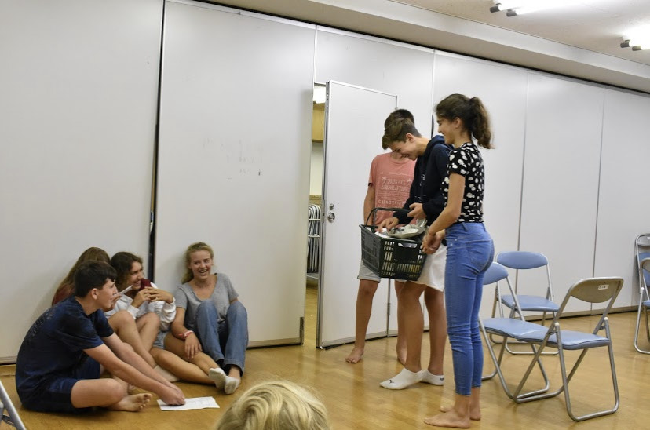
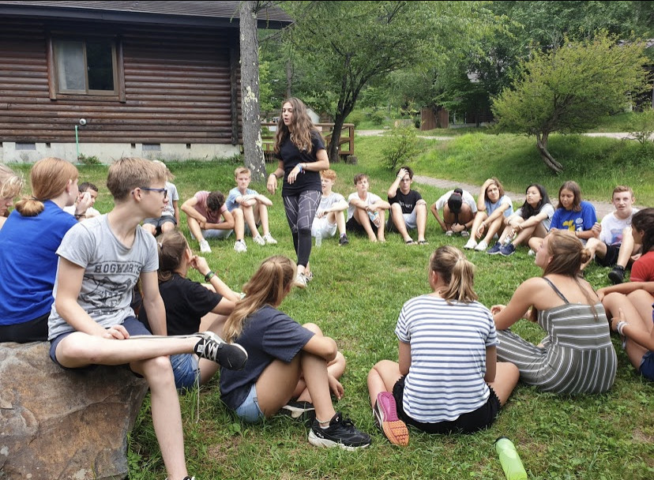
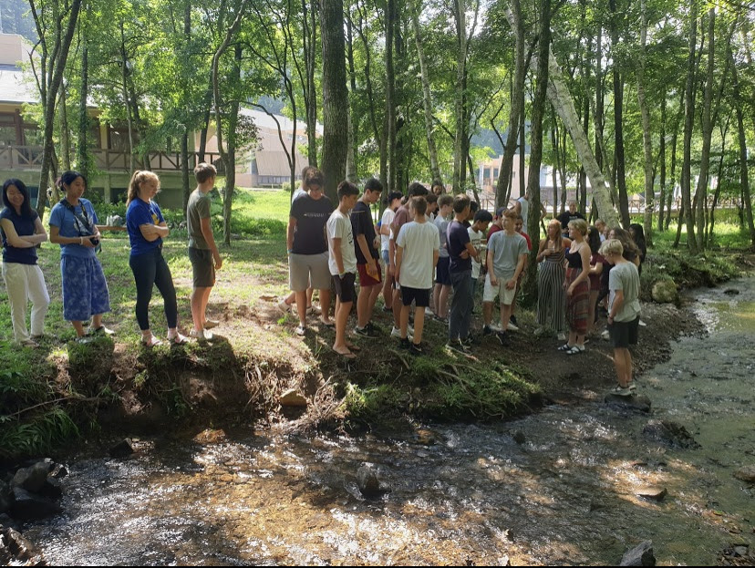
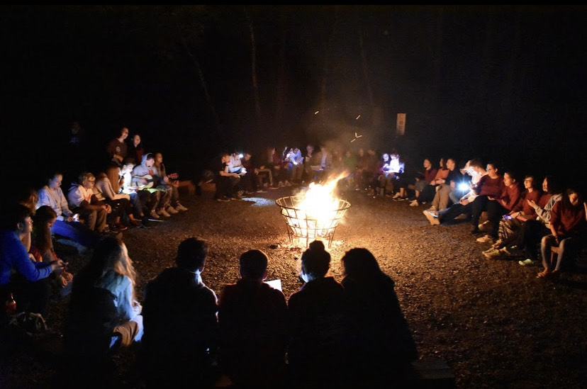
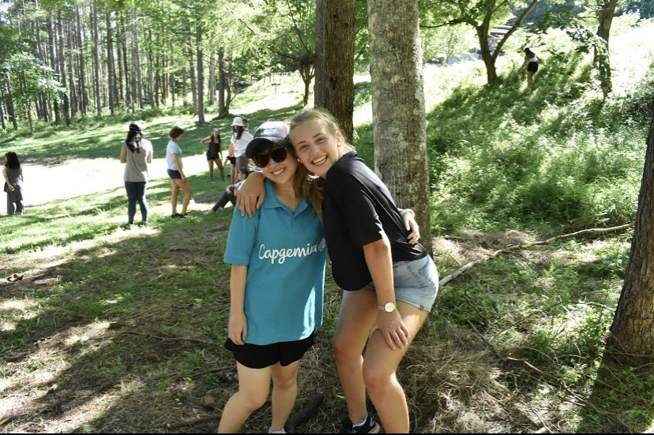
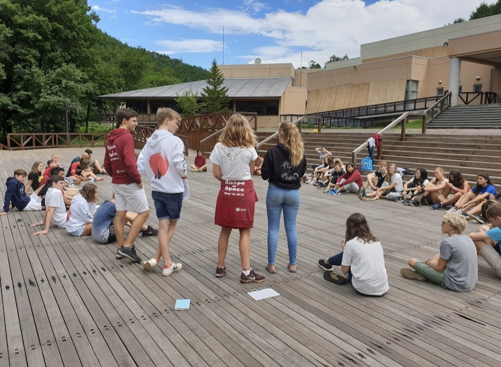
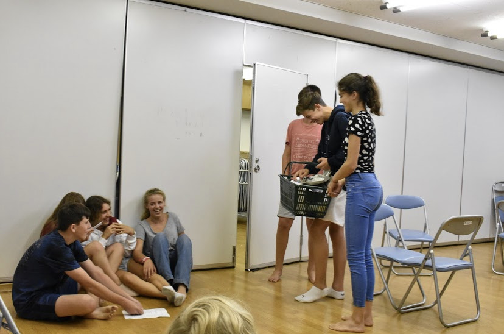
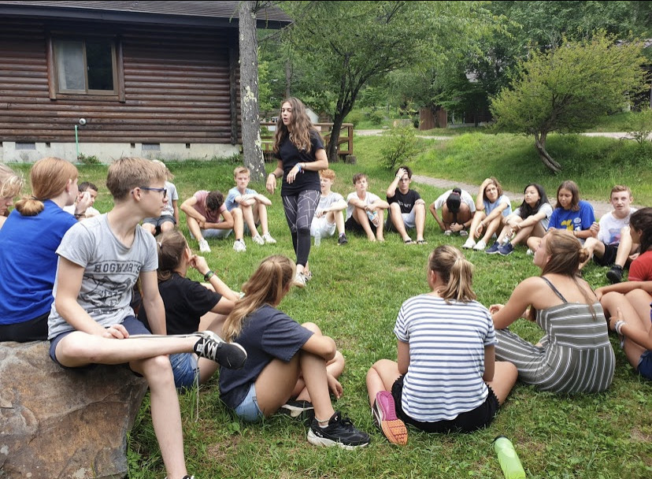
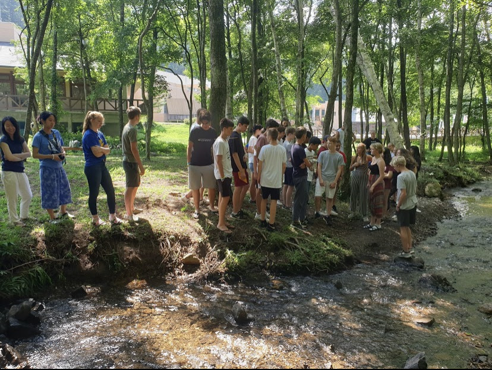
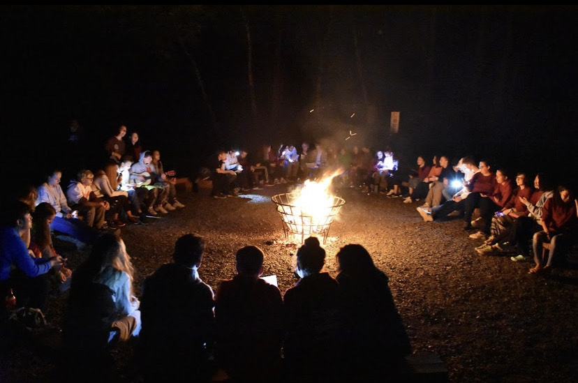
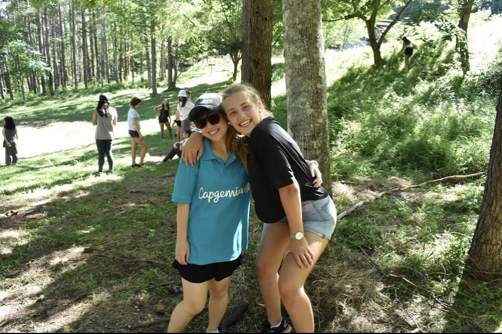
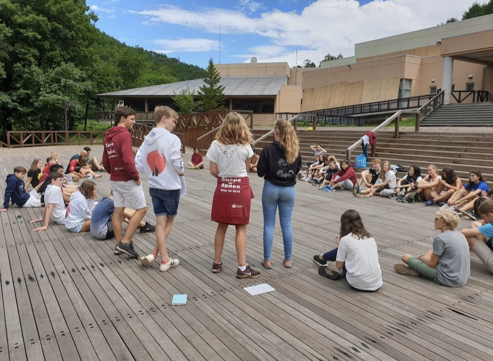